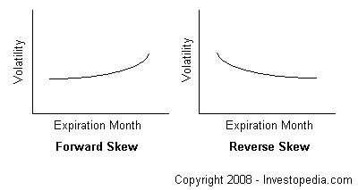

The difference in implied volatility (IV) across options with different expiration dates. Horizontal skew refers to the situation where at a given strike price, IV will either increase or decrease as the expiration month moves forward into the future. A forward horizontal skew occurs when volatilities increase from near to far months. A reverse horizontal skew occurs when volatilities decrease from near to far months.
Intuitively, you would think that volatility increases as the expiration moves into the future because of increased uncertainty, and most options do. However, reverse horizontal skew can and often does occur during news events such as earnings announcements. In cases such as these, many options will actually trade with a combination of forward and reverse skew similar to that of the vertical skew's volatility smile. This is because options that expire far in the future will always tend to trade with higher IVs than shorter term options, regardless of events happening in the near term.
{kind=link}